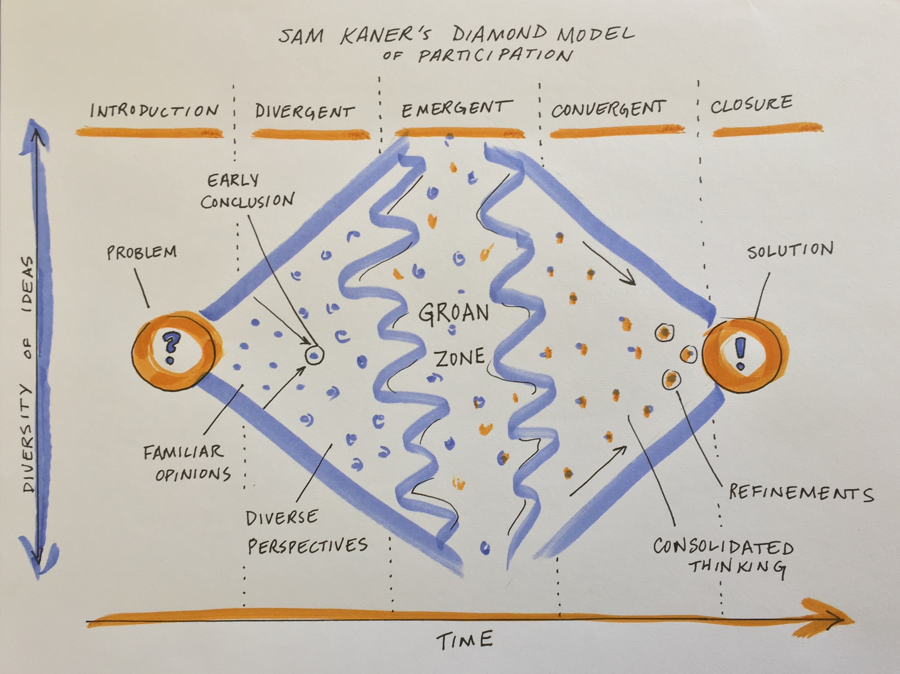
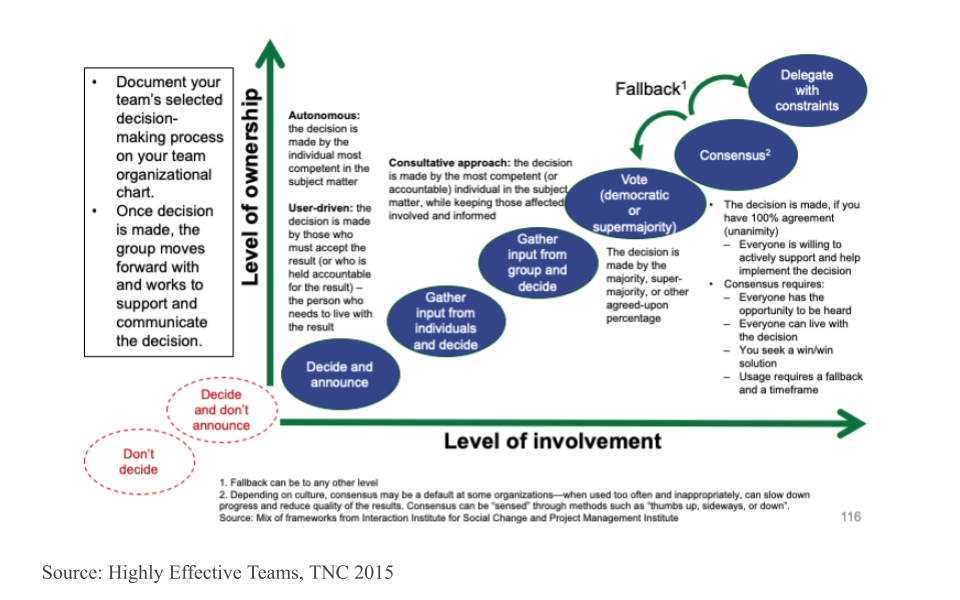

# Load the supportR package
library(supportR)Building Consensus & Checking the Data
Overview
Under Construction
Learning Objectives
TBD
Preparation
TBD
Collaborative Convergence
At the beginning of a collaborative process, the most important initial outcome is getting convergence or group alignment on a set of shared goals and objectives and a plan for how to achieve them. If your team process is effective, this plan will be an inclusive solution–one that works for everyone in the group. Achieving this shared vision can be more difficult than one might expect. While you may expect that participants have already agreed to the vision in joining the group, agreement does not always equate to alignment. This module focuses on tools and resources to help your group navigate to convergent, inclusive solutions that everyone on the team can align around.
Embracing Divergent Thinking
The first stage of group decision making is divergent thinking (Kaner et al. 2014). Confronted with a new, complex topic, the group will gradually move from the safe territory of familiar opinions into sharing their diverse perspectives and exploring new ideas. This can feel like the group process is devolving away from what was assumed to be shared agreement, but it is actually a critical part of the collaborative process.

When a diverse group comes together to work on a complex problem, their views are likely to diverge widely across many dimensions from problem definition to priorities to methods/approaches to the definition of success. But you can tap that divergent thinking to generate entirely new ideas and options that emerge through the group’s productive struggle for mutual understanding.
While your working group is in the divergent thinking stage, it’s critical to foster dialogue to surface different perspectives. Examine hidden assumptions. Create room for disagreement and questioning. Amplify diverse perspectives–and particularly, voices from the edge (e.g., junior members, new collaborators, people from different disciplines, non-scientists who may be affected by the research)–in order to expand the range of possibilities. Mirror and validate what you hear. Invite people who are good at bridging across disciplinary or other differences to help translate and build shared understanding of methods and ways of thinking. Suspend judgment and encourage full participation.
Beware of the most common pitfall at this stage, which is to converge too quickly on an early conclusion, staying in the safe space of familiar opinions and status quo solutions. You can prepare for this stage and help to avoid that pitfall by reviewing prior work and synthesizing data and knowledge gaps, promising approaches, and critical questions. Your team can use that synthesis of the current state of the science as a jumping off point.
Making it Through the Groan Zone
It’s natural for groups to go through a period of confusion and frustration as they struggle to integrate their diverse perspectives into a shared framework of understanding (Kaner et al. 2014). The goal is to get the group across this no man’s land between divergent thinking and convergence known as the “groan zone”. In the groan zone, the group leader or facilitator’s job is to keep the group from getting frustrated and shutting down.
While the groan zone can be challenging, it can also be an extremely fruitful and creative stage. Here in the messy middle of a group process, an open and flexible mindset and a process that invites participants to engage in emergent thinking can enable true innovation. Emergent thinking builds upon ideas generated in the divergent thinking stage, recombining or adapting them in novel ways. It seeks to identify patterns and make meaning in the face of complexity and uncertainty. Done well, emergent thinking enables a group to adapt, sense opportunities, and generate new and exciting ideas.
Some useful techniques for navigating the groan zone and fostering emergent thinking include:
- Cultivating presence and patience
- Active listening
- Building shared understanding via translation (e.g. across disciplines), metacognition (thinking about how you are thinking), and inquiry
- Exploring new data, models, and ways of presenting information
- Creating categories to reveal structure and allow sorting and prioritization of ideas
- Combining or recombining ideas or methods to yield new approaches
- Working together to separate facts from opinions
- Carefully examining language, e.g. by looking word by word at a key statement or question that is being debated and asking what questions each word raises
- Capturing side issues in writing and reserving time to revisit these – taking the tangents seriously is a critical part of letting participants know you value their contributions
- Examining how proposed ideas might affect each individual in the group
- Honoring objections to the process and asking for suggestions
- Addressing power imbalances and elevating voices from the “edge”
Some typical obstacles to emergent thinking include:
- Disciplinary differences in epistemology, vocabulary, and methods that impede understanding
- Analysis paralysis - getting lost in the weeds of endless analysis and detail
- Polarization - opposite camps anchored in
- Power dynamics that squelch creative contributions from the “edges”
- Avoidance of a deeper issue impeding collaboration (e.g. lack of trust)
- Turf wars, competition
- Risk aversion, perception management, fear of failure / getting it wrong
- Confirmation bias and resistance to ideas that challenge group identity and beliefs
If you find the conversation getting off track or the dynamics becoming difficult, useful techniques that allow you to remain committed to being supportive and respectful of all group members (including ones you might experience as “difficult”) include:
- Reminding individuals of the larger purpose of the group and reconnecting them to their own personal reasons for caring about and working on the issue, e.g. by inviting them to take a moment to reflect or to restate what success looks like
- Focusing on common ground and areas of potential alignment
- Inviting constructive opposition - ask the critic to say what they can support about a given proposal and what they would like to see changed or discussed further
- Switching the participation format (e.g., going to breakout groups, brainstorming, a go-around, or individual writing)
- Taking a break
- Stepping out of the content and addressing the process
- Educating members about group dynamics and asking them to reflect on how they are showing up
- Encouraging more people to participate
- Reframing the discussion, e.g. by surfacing underlying issues, and/or focusing on concrete actions that the group can take to resolve the conflict
Don’t get discouraged by the groan zone. Misunderstanding and miscommunication are normal parts of the process of collaboration. And even more importantly, “the act of working through these misunderstandings is what builds the foundation for sustainable agreements [and]… meaningful collaboration” (Kaner et al. 2014).
Getting to Convergence
Once the group has a strong foundation of shared understanding, things often start to click into place and feel easier and faster as you enter the zone of convergent thinking. At this point, the group is ready to devise inclusive solutions, weigh alternatives and make decisions. As the group leader your role is to help the group devise specific proposals, evaluate and decide among them, refine and synthesize into an overall approach, and lay out a concrete plan. The risk at this stage is that the group never converges on a clear decision or plan, leading the group to spin its wheels in the future.
Discuss as a team how you want to make decisions - what is your decision making process going to be? Will it be based on consensus? Majority rules? Or will you delegate the decisionmaking to the team leader or a sub-team who are closest to the decision? What’s your fallback plan if you can’t reach a decision during your time together? The figure below arrays a variety of different decisionmaking processes onto the axes of level of group member involvement and level of group member ownership. Note that the two red circles that are off the graph in the bottom left should definitely be avoided!

Techniques that are useful in this phase include:
- Pulling up concrete examples for inspiration
- Inviting concrete, written proposals
- Clarifying selection criteria and evaluating proposals against them
- Combining the best elements of multiple ideas to support more innovative, inclusive solutions
- Deciding what ideas to pursue and which to keep on the back burner in case the team needs to adapt
- Defining steps and milestones, planning the work flow, and assigning roles and responsibilities
While the big work of the initial stage of a synthesis science project is getting to convergence on the overall work plan, you should expect that the group may go through the process of divergence and convergence again at multiple points in the process as you dive into the work and uncover new challenges. But the shared understanding and social rapport that come from successfully struggling together early on will allow the group to more easily and rapidly develop and implement new solutions in subsequent meetings.
Quality Control
You may have encountered the phrase “QA/QC” (Quality Assurance / Quality Control) in relation to data cleaning. Technically, quality assurance only encapsulates preventative measures for reducing errors. One example of QA would be using a template for field datasheets because using standard fields reduces the risk that data are recorded inconsistently and/or incompletely. Quality control on the other hand refers to all steps taken to resolve errors after data are collected. Any code that you write to fix typos or remove outliers from a dataset falls under the umbrella of QC.
In synthesis work, QA is only very rarely an option. You’ll be working with datasets that have already been collected and attempting to handle any issues post hoc which means the vast majority of data wrangling operations will be quality control methods. These QC efforts can be incredibly time-consuming so using a programming language (like R or Python) is a dramatic improvement over manually looking through the data using Microsoft Excel or other programs like it.
QC Considerations
The datasets you gather for your synthesis project will likely have a multitude of issues you’ll need to resolve before the data are ready for visualization or analysis. Some of these issues may be clearly identified in that datasets’ metadata or apply to all datasets but it is good practice to make a thorough QC effort as early as is feasible. Keep the following data issues and/or checks in mind as we cover code tools that may be useful in this context later in the module.
- Verify taxonomic classifications against authorities
- Handle missing data
- Some datasets will use a code to indicate missing values (likely identified in their metadata) while others will just have empty cells
- Check for unreasonable values / outliers
- Can use conditionals to create “flags” for these values or just filter them out
- Check geographic coordinates’ reasonability
- E.g., western hemisphere coordinates may lack the minus sign
- Check date formatting
- I.e., if all sampling is done in the first week of each month it can be difficult to say whether a given date is formatted as MM/DD/YY or DD/MM/YY
- Consider spatial and temporal granularity among datasets
- You may need to aggregate data from separate studies in different ways to ensure that the data are directly comparable across all of the data you gather
- Handle duplicate data / rows
Number Checking
When you read in a dataset and a column that should be numeric is instead read in as a character, it can be a sign that there are malformed numbers lurking in the background. Checking for and resolving these non-numbers is preferable to simply coercing the column into being numeric because the latter method typically changes those values to ‘NA’ where a human might be able to deduce the true number each value ‘should be.’
# Create an example dataset with non-numbers in ideally numeric columns
fish_ct <- data.frame("species" = c("salmon", "bass", "halibut", "moray eel"),
"count" = c(12, "14x", "_23", 1))
# Check for malformed numbers in column(s) that should be numeric
bad_nums <- supportR::num_check(data = fish_ct, col = "count")For 'count', 2 non-numbers identified: '14x' | '_23'In the above example, “14x” would be coerced to NA if you simply force the column without checking but you could drop the “x” with text replacing methods once you use tools like this one to flag it for your attention.
Text Replacement
One of the simpler ways of handling text issues is just to replace a string with another string. Most programming languages support this functionality.
# Use pattern match/replace to simplify problem entries
fish_ct$count <- gsub(pattern = "x|_", replacement = "", x = fish_ct$count)
# Check that they are fixed
bad_nums <- supportR::num_check(data = fish_ct, col = "count")For 'count', no non-numeric values identified.The vertical line in the gsub example above lets us search for (and replace) multiple patterns. Note however that while you can search for many patterns at once, only a single replacement value can be provided with this function.
Regular Expressions
You may sometimes want to perform more generic string matching where you don’t necessarily know–or want to list–all possible strings to find and replace. For instance, you may want remove any letter in a numeric column or find and replace numbers with some sort of text note. “Regular expressions” are how programmers specify these generic matches and using them can be a nice way of streamlining code.
# Make a test vector
regex_vec <- c("hello", "123", "goodbye", "456")
# Find all numbers and replace with the letter X
gsub(pattern = "[[:digit:]]", replacement = "x", x = regex_vec)[1] "hello" "xxx" "goodbye" "xxx" # Replace any number of letters with only a single 0
gsub(pattern = "[[:alpha:]]+", replacement = "0", x = regex_vec)[1] "0" "123" "0" "456"The stringr package cheatsheet has a really nice list of regular expression options that you may find valuable if you want to delve deeper on this topic. Scroll to the second page of the PDF to see the most relevant parts.
Custom Functions
Writing your own, customized functions can be really useful particularly when doing synthesis work. Custom functions are generally useful for reducing duplication and increasing ease of maintenance and also can be useful end products of synthesis work in and of themselves.
If one of your group’s outputs is a new standard data format or analytical workflow, the functions that you develop to aid yourself become valuable to anyone who adopts your synthesis project’s findings into their own workflows. If you get enough functions you can even release a package that others can install and use on their own computers. Such packages are a valuable product of synthesis efforts and can be a nice addition to a robust scientific resume/CV.
# Define custom function
crab_hist <- function(df, size_cat){
# Subset data to the desired category
data_sub <- dplyr::filter(.data = df, size_category == size_cat)
# Create a histogram
p <- psych::multi.hist(x = data_sub$size)
}
# Invoke function
crab_hist(df = pie_crab_v4, size_cat = "tiny")When writing your own functions it can also be useful to program defensively. This involves anticipating likely errors and writing your own error messages that are more informative to the user than whatever machine-generated error would otherwise get generated
# Define custom function
crab_hist <- function(df, size_cat = "small"){
# Error out if 'df' isn't the right format
if(is.data.frame(df) != TRUE)
stop("'df' must be provided as a data frame")
# Error out if the data doesn't have the right columns
if(all(c("size_category", "size") %in% names(df)) != TRUE)
stop("'df' must include a 'size' and 'size_category' column")
# Error out for unsupported size category values
if(size_cat %in% unique(df$size_category) != TRUE)
stop("Specified 'size_cat' not found in provided data")
# Subset data to the desired category
data_sub <- dplyr::filter(.data = df, size_category == size_cat)
# Create a histogram
p <- psych::multi.hist(x = data_sub$size)
}
# Invoke new-and-improved function
crab_hist(df = pie_crab_v4)- 1
- The default category is now set to “small”
- 2
- We recommend phrasing your error checks with this format (i.e., ’if <some condition> is not true, then <informative error/warning message>)
- 3
-
The
%in%operator lets you check whether one value matches any element of a set of accepted values. Very useful in contexts like this because the alternative would be a lot of separate “or” conditionals - 4
- We don’t need to specify the ‘size_cat’ argument because we can rely on the default